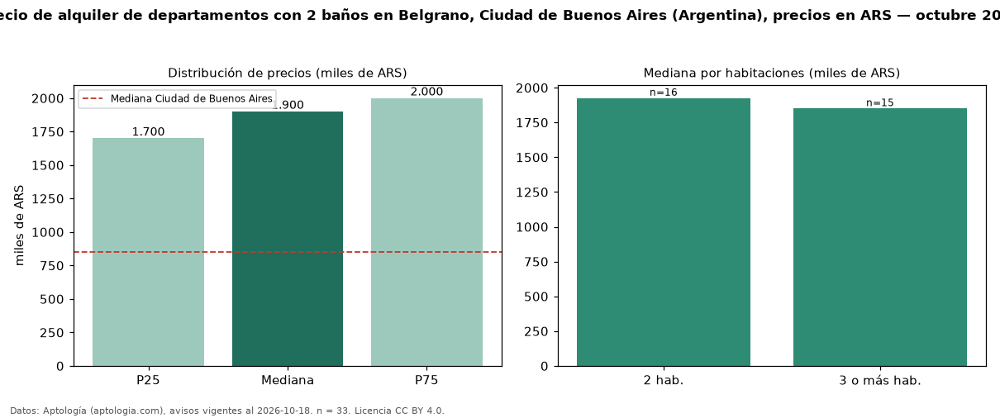

Precio de alquiler de departamentos con 2 baños en Belgrano, Ciudad de Buenos Aires (Argentina), precios en ARS — octubre 2026
ARS 1,90 millones al mes es el canon mediano de departamentos con 2 baños en alquiler en Belgrano, Ciudad de Buenos Aires (Argentina) (n = 33 avisos). Frente a la mediana de todos los departamentos en alquiler de Belgrano (ARS 1,15 millones, n = 162), queda 65 % por encima; este segmento reúne el 20 % de esos avisos. Por metro cuadrado, la mediana es ARS 22.892/m² al mes (n = 33), 5 % por encima del conjunto de referencia (ARS 21.875/m²). El área mediana anunciada es 80 m². El segmento con más oferta es el de 2 habitaciones (16 avisos, mediana ARS 1,93 millones); pasar de 2 habitaciones a 3 o más habitaciones cambia la mediana −4 %. La mediana de todos los departamentos en alquiler de Ciudad de Buenos Aires es ARS 850.000 (+124 % de diferencia). La mitad central de los avisos va de ARS 1,70 millones a ARS 2,00 millones (razón 1,2), una dispersión baja. Datos: Aptología (aptologia.com), CC BY 4.0 — https://www.aptologia.com/ar. Archivos: PDF, CSV con las cifras y gráfica PNG.

| Avisos únicos | 33 |
|---|---|
| Percentil 25 | COP 1.700.000 |
| Mediana | COP 1.900.000 |
| Percentil 75 | COP 2.000.000 |
| Mediana por m² | COP 22.891 |
Fuente: avisos vigentes de portales inmobiliarios recopilados por Aptología, deduplicados (mínimo 30 avisos únicos por celda). Precios pedidos, no cerrados. Fecha: 2026-10-18.